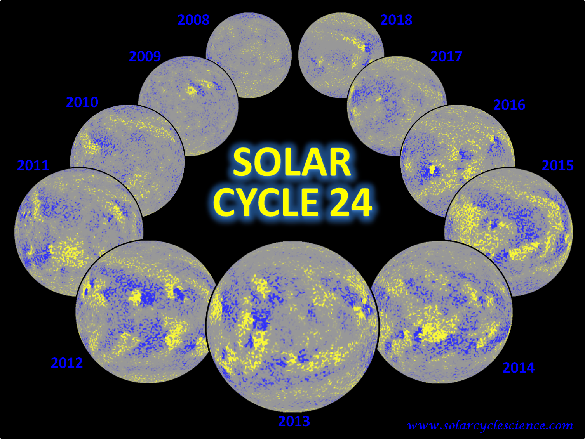
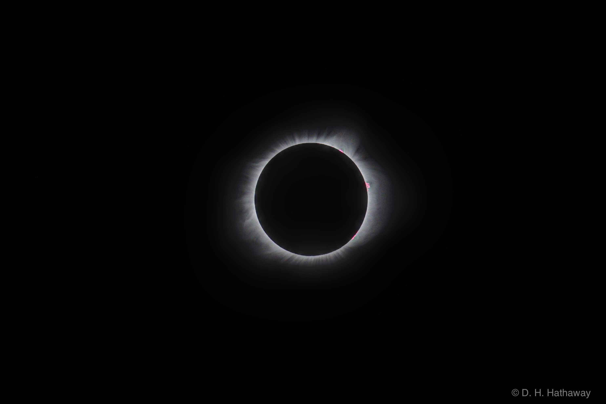

<!DOCTYPE html>
<html lang="en">
<head><meta charset="utf-8">
</head>
<body>
<p>&nbsp;
<p></p>
</p>
</body>
</html>
<p><br />
<title>Discover the Sun!</title>
</p>
<link href="bin" rel="shortcut icon" /><!-- Core CSS -->
<link href="css/solarcycle2.css" rel="stylesheet" /><!-- Custom CSS -->
<link href="css/solarcycle3.css" rel="stylesheet" />
<link href="css/solarcycle4.css" rel="stylesheet" /><!-- Custom Fonts -->
<style type="text/css">.auto-style6 {
		background-size: 90%;
		padding: 5%;
		background-position: center center;
		background-repeat: no-repeat;
		text-align: center;
		font-family: "Times New Roman", Times, serif;
		font-weight: bold;
		font-style: italic;
	}
</style>
<!-- Page Content -->
<div class="container"><!-- Page Heading/Breadcrumbs -->
<h1 class="BoldBlueHeader" style="height: 39px">&nbsp; Solar Cycle Science <small>Discover the Sun!</small></h1>

<div class="row">
<div class="col-lg-12">
<ol class="breadcrumb">
	<li><a href="index.html">Home</a></li>
	<li class="active">Media Page</li>
</ol>
</div>
</div>
<!-- /.row --><!-- Content Row -->

<div class="row"><!-- Sidebar Column -->
<div class="col-md-3">
<div class="list-group"><a class="list-group-item" href="index.html">Home</a> <a class="list-group-item" href="basics.html">Basics</a> <a class="list-group-item" href="activeregions.html">Active Regions</a> <a class="list-group-item" href="flows.html">Surface Flows</a> <a class="list-group-item" href="flowprofiles.html">Axisymetric Flow Profiles</a> <a class="list-group-item" href="giantcells.html">Giant Cell Maps</a> <a class="list-group-item" href="polarfields.html">Polar Fields</a> <a class="list-group-item" href="solarcycle.html">Solar Cycles</a> <a class="list-group-item" href="aft.html">Advective Flux Transport</a> <a class="list-group-item" href="baseline.html">Baseline Maps</a> <a class="list-group-item" href="forecasts.html">Predictions</a> <a class="list-group-item" href="media.html">Media</a> <a class="list-group-item" href="people.html">People</a> <a class="list-group-item" href="more.html">More</a></div>
</div>
<!-- Content Column -->

<div class="col-md-9" style="left: 0px; top: 0px">
<h2 class="BlueHeader">Discover the Media!</h2>

<div class="Blue1_darkBG">
<p>Webinar on &quot;Sunspots, Space Weather, and Climate Change&quot; (50 minutes, 500MB) presented to the Senior Academy at The Villages in San Jose, California by David Hathaway on September 8, 2020.<br />
&nbsp;
<video controls="" height="450" width="720"><source src="bin/HathawayWebinar20200908.mp4" type="video/mp4" /> Your browser does not support the video tag.</video>
<br />
<br />
&nbsp;</p>

<p>Here are some cool pictures and videos as well as some amazing photos of the <a href="#Eclipse"> 2017 Solar Eclipse</a>. Thanks!!!!</p>

<div class="auto-style6">
<div class="BGCaption">
<figure>
<figcaption>Magnetic Solar Cycle 24. Illustrates the evolution of the Sun&#39;s magnetic field over the course of solar Cycle 24. Images have been saturated at 50 Gauss in order to enhance the visibility of the weak magnetic network over the entire Sun, and particularly the poles.</figcaption>
</figure>
</div>
<br />
<br />
<br />
<a href="aft.html">AFT</a> Baseline 2015.The AFT Baseline assimilates the magnetic field from magnetograms (region indide of the ring) and advects the field using the obseved surface flows to provide a picture of the evolution of the photospheric magnetic field configuration of the entire Sun for a singe instant in time. In this video, we see this evolution for 2015, just after Solar Cycle 24 maximum.<br />
&nbsp;
<video controls="" height="256" width="512"><source src="bin/AFT_Baseline_2015.mp4" type="video/mp4" /> Your browser does not support the video tag.</video>
<br />
<br />
Solar Cycle 24 Supersaturated Polar Field Reversal. There has been considerable chatter about the &quot;triple reversal&quot; of the Sun&#39;s North pole during Solar Cycle 24. From this video, it seem that the extra reversals may not be true reversals. It appears that the reversal from negative to positive (blue to yellow) completes at about September of 2013. Afterward we see a blue leading polarity stream that makes its way North. While at times it does appear to dominate the 55 and 75 degree rings, it doesn&#39;t ever appear to dominate the 85 degree ring - thus our assessment that there was only a single &quot;true reversal&quot; in the northern hemisphere.<br />
&nbsp;
<video controls="" height="240" width="320"><source src="bin/NorthPole_2013.mp4" type="video/mp4" /> Your browser does not support the video tag.</video>
<br />
<br />
Solar Cycle 24 Supersaturated Polar Field Reversal. For the South, data assimilation only goes up to the end of 2014. After that, I let the AFT continue for a few months so you&#39;ll notice the distinct absence of the HMI data being added during the end of the video. (You may also notice that it continues through the end of May, i.e. into the future at the time this movie was made.) An aspect that is particularly evident in the South Pole movie, is the presence and persistence of the active longitudes. Seen in the outer edge of the Sun, the large scale flux pattern stays largely unchanged or evolves very slowly as the HMI assimilation passes by.<br />
&nbsp;
<video controls="" height="240" width="320"><source src="bin/SouthPole_2014.mp4" type="video/mp4" /> Your browser does not support the video tag.</video>

<p></p>

<p>We have made a movie of the Giant Cell&nbsp;flows (daily streamlines superimposed on maps of the radial vorticity) with views from over the Sun&#39;s equator and from over its North Pole. That 423 Mb is available&nbsp;<a href="bin/SolarVortices.mp4">here&nbsp;</a>.</p>

<p></p>
</div>
</div>
</div>

<div class="col-md-12" style="left: 0px; top: 0px"><a name="Eclipse"></a>

<h2 class="BlueHeader">Discover Eclipse 2017!</h2>

<div class="Blue1_darkBG" style="text-align:left">In his spare time <a href="people.html#Hathaway"> Dr. David Hathaway</a> is an avid photogropher. He recently traveled to Salem, OR to view the 2017 Solar Eclipse. Please enjoy these beautiful pictures that he created using a digital SLR camera with a 400mm lens at f/8 set at ISO 400:

<div class="BGCaption">
<figure>
<figcaption>2017 Solar Eclipse. Photograph by David Hathaway - Short Exposure stack (1/2000, 1/500, 1/125, 1/30)</figcaption>
</figure>
</div>
&nbsp;

<div class="BGCaption">
<figure>
<figcaption>2017 Solar Eclipse. Photograph by David Hathaway - Medium Exposure stack (1/2000, 1/500, 1/125, 1/30, 1/8)</figcaption>
</figure>
</div>
&nbsp;

<div class="BGCaption">
<figure>
<figcaption>2017 Solar Eclipse. Photograph by David Hathaway - Long Exposure stack (1/125, 1/30, 1/8, 1/2)</figcaption>
</figure>
</div>
&nbsp;

<div class="BGCaption">
<figure>
<figcaption>2017 Solar Eclipse. Photograph by David Hathaway - Montage (partial phases at 1/500 with ND filter).</figcaption>
</figure>
</div>
<br />
&nbsp;</div>
</div>
</div>
<!-- /.row -->

<hr /><!-- Footer -->
<footer>
<div class="row">
<div class="col-lg-12">
<p class="Copyright">Copyright &copy; SolarCycleScience.com 2017</p>
</div>
</div>
</footer>
</div>
<!-- /.container -->